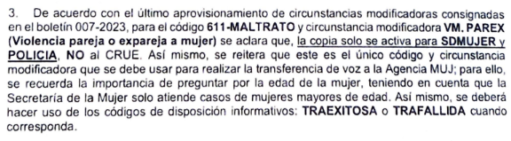

¡Bienvenidos y bienvenidas al último módulo virtual de formación del programa Operador de Recepción!
En este módulo realizarás lecturas y actividades que te permitirán desarrollar las competencias necesarias para identificar, clasificar y registrar de manera adecuada las situaciones reportadas por la ciudadanía, mediante el uso de los códigos correspondientes para tipificar incidentes de emergencia y seguridad.
1. Objetivos
Reconocer los criterios para la tipificación de incidentes de seguridad y emergencias de Bogotá.
Clasificar incidentes de seguridad y emergencias a partir de la Guía de Tipificación vigente.
Aplicar la Guía de Tipificación vigente para asegurar la seguridad, la integridad y el bienestar de las personas que requieren atención.
2. Temáticas Abordadas
Guía de tipificación de incidentes.
Caracterización de incidentes.
Códigos de disposición, cierre e informativos.
Casuística.
3. Actividades
Antes de comenzar, ubícate en un lugar cómodo, vas a desarrollar varias lecturas. Consigue un cuaderno, lápiz o esfero, o alguna herramienta digital para tomar apuntes.
¡Comencemos!
3.1. Guía de tipificación de incidentes
La tipificación de incidentes en la Línea de Emergencias 123 de Bogotá es un proceso fundamental para la gestión de emergencias en la ciudad.
Definición: A partir de la información proporcionada por la ciudadanía, los operadores y las operadoras de recepción clasifican los incidentes mediante criterios predefinidos entre todas las agencias del Sistema NUSE.
Aunque sencilla, la tipificación es una pieza fundamental dentro de la gestión de emergencias en la ciudad. A partir de la clasificación se definen prioridades, se orientan acciones y se identifican responsables para dar una respuesta eficiente y oportuna a la ciudadanía.
Considera el siguiente relato:
¡Ring! ¡Ring! Ingresa una llamada a la Línea 123 de Bogotá.
Contesta una operadora de recepción.
— Línea 123 Bogotá, ¿cuál es su emergencia?
Al otro lado del teléfono, responde una ciudadana con un tono agitado:
— Señorita, estoy con mi amiga que se encuentra muy mal. Íbamos caminando hacia nuestra casa después de haber comido un ceviche de camarones en un restaurante y empezó a sentirse muy mal. No puede caminar más, parece que está intoxicada.
Ante la información inicial, la operadora identifica la definición de intoxicación:
Entrada en el organismo de sustancias capaces de provocar alteraciones en las funciones del ser humano y que pueden ocasionar salivación abundante, calor, aumento de la frecuencia cardiaca, piel roja, vómito o diarrea. Para la redacción debe tenerse en cuenta el tipo de intoxicación: comida, fines delictivos (escopolamina, burundanga, etc.), veneno, alcohol, pintura, medicamentos u otros.
Por tanto, la operadora pregunta a la ciudadana:
— ¿Sabe cuántas personas están intoxicadas?
— La verdad no sé; por ahora solo mi amiga. ¡Necesito ayuda!
La operadora sabe qué está ocurriendo, pero necesita identificar dónde sucede el incidente. Continúa realizando preguntas:
— Señora, ¿puede proporcionarme la dirección donde se encuentran?
— Estamos sobre la calle 72 con carrera décima, frente al Centro Comercial Granahorrar.
La operadora identifica la ubicación y verifica la información del sector.
— Señora, ¿se encuentra en el barrio La Porciúncula, en la localidad de Chapinero?
— Sí, sí, es allí donde nos encontramos.
La operadora pregunta el nombre de la ciudadana y el número telefónico desde el cual llama, y verifica si dispone de un número adicional.
Finalmente, la operadora le indica:
— Permanezca en línea, voy a comunicarle con la Secretaría de Salud.
La operadora intenta hacer la transferencia. Después del primer intento sin respuesta, retoma la llamada e insiste en la transferencia.
Luego de varios intentos, la transferencia no resulta exitosa. La operadora informa a la ciudadana que se está gestionando la ayuda y finaliza la llamada.
En este punto, la operadora cuenta con la información necesaria para gestionar el incidente: aplicó las preguntas correspondientes, intentó realizar la transferencia y registró la información para que la agencia pertinente conozca la situación.
En este ejemplo, la operadora supo qué debía hacer porque conocía la Guía de Tipificación, un documento construido entre las agencias del Sistema NUSE. Allí se encuentran los criterios para clasificar los incidentes, así como:
Las preguntas que deben realizar los operadores y las operadoras de recepción.
Las circunstancias particulares que pueden presentarse dentro de un mismo incidente.
Las agencias a las que se debe transferir la llamada.
Las agencias a las que se copia o se remite el incidente.
Esta es la información de referencia para las intoxicaciones que se presenta en el material de formación:
Tipo de incidente
Descripción
Preguntas
Circunstancia modificadora
Descripción de circunstancia
Transferencia de voz
Copia de incidente
610 INTOX (Intoxicación)
Entrada en el organismo de sustancias capaces de alterar las funciones del ser humano y que pueden ocasionar salivación abundante, calor, aumento de la frecuencia cardiaca, piel roja, vómito o diarrea. Se debe precisar el tipo de intoxicación: comida, fines delictivos, veneno, alcohol, pintura, medicamentos u otros.
¿Sabe con qué se intoxicó? ¿Sabe cuántas personas están intoxicadas?
¿Ocurrió en un establecimiento abierto al público? Si aplica, seleccionar EST.PUB.
¿Se hizo con fines delictivos? Si aplica, seleccionar LES.PER.
—
—
TARM
CRUE
610 INTOX
Misma descripción del incidente 610 INTOX.
Mismas preguntas indicadas en la fila anterior.
EST.PUB
Establecimiento abierto al público.
TARM
CRUE, Policía
610 INTOX
Misma descripción del incidente 610 INTOX.
Mismas preguntas indicadas en la fila anterior.
LES.PER
Lesiones personales.
TARM
CRUE, Policía
610 INTOX
Misma descripción del incidente 610 INTOX.
Mismas preguntas indicadas en la fila anterior.
NOBOGOTA
—
—
Policía
Actividad 1
Como operador u operadora de recepción, la Guía de Tipificación será el documento más importante que deberás aprender para desarrollar tus actividades. Descarga
la Guía de Tipificación vigente
y responde las siguientes preguntas:
¿Cuántos códigos de disposición tiene actualmente la Guía?
¿Cuántos códigos de disposición y cierre tiene la Guía?
¿Cuál es la diferencia entre un código de disposición y cierre y un código de disposición?
¿Cuántos códigos de tipificación tienen solamente un código alfabético?
3.2. Cambios, ajustes y complementos de la Guía de Tipificación
La Guía de Tipificación es un documento que se revisa y ajusta constantemente. La sociedad cambia, las formas como nos interrelacionamos se transforman y los eventos y situaciones llevan a que se modifiquen parcial o totalmente algunos elementos de la Guía.
Todo cambio a la Guía es un esfuerzo institucional y un acuerdo entre las diferentes agencias del Sistema NUSE. Cuando se realiza un cambio, se puede emitir un boletín en el que se detallan los ajustes que deberán seguirse al recibir una llamada de emergencia.
Actividad 2
Como se indicó en el módulo 1, puede existir información reservada o clasificada que no puede compartirse ni publicarse. Los boletines pueden formar parte de ese acervo documental, por lo que su divulgación debe estar autorizada.
Si cuentas con autorización para utilizar el fragmento correspondiente, inclúyelo en este espacio:

A partir del fragmento autorizado, responde:
¿Cómo se ajusta el código de tipificación 611? Apóyate en el formato de la Guía para identificar los cambios.
Si llama una mujer de 19 años que reporta una agresión de su tío, ¿se activa la circunstancia modificadora VM.PAREX? Justifica tu respuesta con base en la Guía.
¿Qué código de disposición y número de comentario se deben usar si la transferencia de llamada fue posible?
No solo se modifican los protocolos; también pueden incorporarse agencias a la gestión de incidentes. Entre las incorporaciones mencionadas en el material de formación está el Instituto Distrital de Bienestar y Protección Animal (IDPYBA).
Los aprendizajes se pueden desarrollorar desde múltiples estrategias, a continuación puedes consultar otra herramienta construida por Equipo de Capacitación del C4 .
Actividad 5
Consulta el recurso de práctica y realiza las actividades propuestas.
4. Actividades de Trabajo Autónomo
Si llegaste hasta aquí, has finalizado el módulo Tipificación de incidentes.
Envía por correo electrónico al Equipo de Capacitación las respuestas y actividades realizadas: